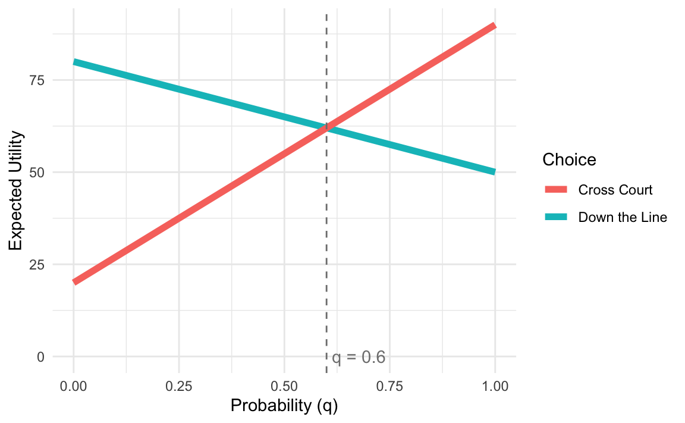
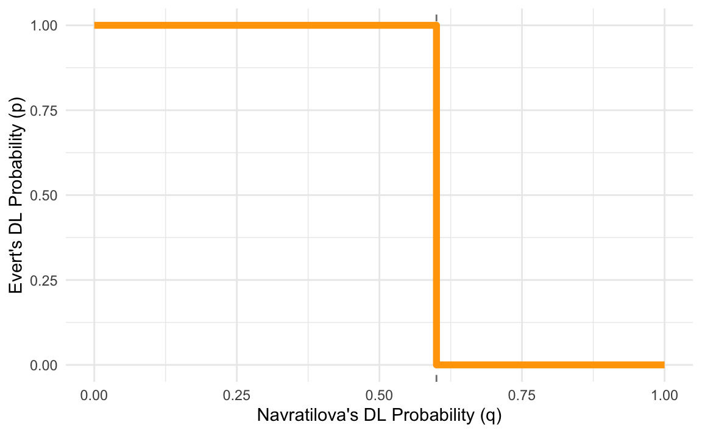
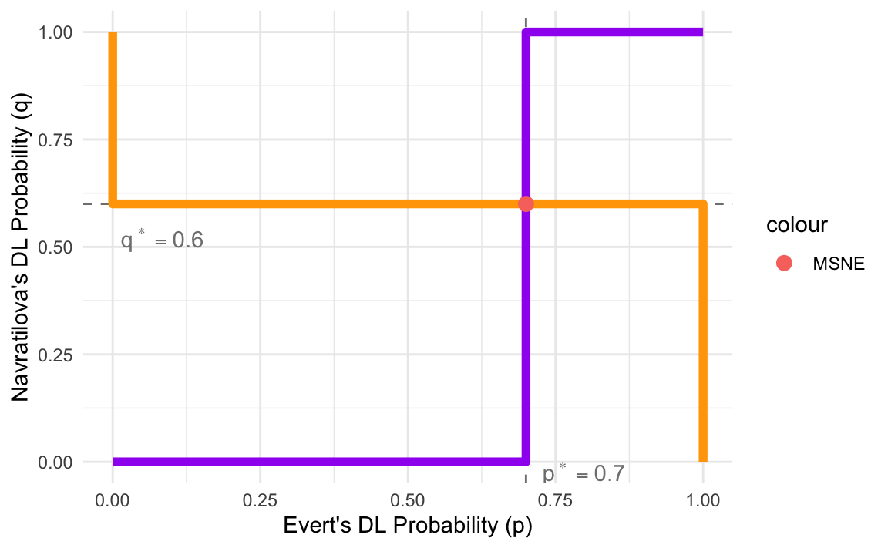

── Attaching core tidyverse packages ──────────────────────── tidyverse 2.0.0 ──
✔ dplyr 1.1.4 ✔ readr 2.1.5
✔ forcats 1.0.0 ✔ stringr 1.5.1
✔ ggplot2 3.5.1 ✔ tibble 3.2.1
✔ lubridate 1.9.3 ✔ tidyr 1.3.1
✔ purrr 1.0.2
── Conflicts ────────────────────────────────────────── tidyverse_conflicts() ──
✖ dplyr::filter() masks stats::filter()
✖ dplyr::lag() masks stats::lag()
ℹ Use the conflicted package (<http://conflicted.r-lib.org/>) to force all conflicts to become errorsResponding to Chance
Thinking about Randomness
“Rational decision makers are able to give reasons for each action they take; outside Las Vegas players do not spin roulette wheels” 1
Do you agree?
Would rational players act randomly?
Mixing Tennis Hits
Should Evert hit Down the Line or Cross-Court?
| Evert, Navratilova | DL | CC |
|---|---|---|
| DL | 50, 50 | 80, 20 |
| CC | 90, 10 | 20, 80 |
- Can you find any Best Responses?
Mixing Tennis Hits
Should Evert hit Down the Line or Cross-Court?
| Evert, Navratilova | DL | CC |
|---|---|---|
| DL | 50, 50 | 80, 20 |
| CC | 90, 10 | 20, 80 |
- No Nash in pure strategies
- Zero-sum game, so incentive to keep opponent guessing
Motivating Randomized Play
Why should we use mixed strategies?!
Some zero-sum games incentivize keeping opponent guessing
Even in non-zero sum games, mixed strategies open up new possibilities
Interpret mixed strategy of one player as the beliefs of other players
Probability and statistics are useful outside of this class
Lotteries
Any choices with uncertain payoffs will be called lotteries.
- Doesn’t have to only be about money
- Any outcome has an associated probability:
- if \(o\) is a possible outcome, then \(p(o)\) is that outcomes probability
- All probabilities must be between 0 and 1:
- \(0 \leq P(a) \leq 1\) for all possibilities \(a\).
- All probabilities in a particular lottery must sum to exactly 1:
Expected Payoffs
How to form a preference for something with an uncertain outcome?
\(U(L) = \mathbb{E}[u(o)] = \sum_{o\in L}u(o)p(o)\)
Average values of a lottery times the probability of how likely each is.
Lottery \(L\) may have two or more potential outcomes \(o_1, o_2, ...\)
The utility function \(u(o)\) tells how much you like each outcome
- Could reflect different risk preferences for e.g., money
Cardinal Payoffs
Expected payoffs imply that payoffs are cardinal
- relative differences in payoffs matter
- instead of ordinal where only rankings matter
- i.e. an outcome with payoff 2 is actually twice as good as an outcome with payoff 1.
Von-Neumann Morgenstern Utility
We need new assumptions for rationality over lotteries:
Continuity: Small changes in probabilities shouldn’t make your ranking jump around.
Independence: If you know which of two lotteries you prefer, when I add a little bit of another unrelated option into both, it shouldn’t change your mind.
expected utility requires special assumptions, so it gets it’s own special name:
- Von-Neumann Morgenstern utility function
Types of Uncertainty
Two main types of uncertainty: external and internal.
- External uncertainty from factors outside of the players’ control
- such as weather or other random events, or external players
- Internal uncertainty from players’ own actions:
- when some player acts in an unpredictable way,
- even to themselves
- For example, I flip a coin to tell me what to choose
- when some player acts in an unpredictable way,
Internal Uncertainty
When one or more players pick their strategies randomly.
Picking a strategy at random is really just a different kind of strategy, called a mixed strategy.
Mixed Strategies in 2x2 Games
Mixed Strategies
When a player always does the same thing, it’s called a pure strategy
A mixed strategy assigns a probability to each of a player’s pure strategies.
- Like a lottery, the probabilities in a mixed strategy must all be between 0 and 1,
- and must sum to exactly 1.
Mixed Strategies
- A mixed strategy can assign 0 probability to a pure strategy.
- It can even assign probability 1 to a single pure strategy, and probability 0 to all others
- this is still, technically, a mixed strategy, but it is a trivial one.
- When a player uses a mixed strategy, it turns the other player’s payoffs into lotteries.
Opponent’s indifference sets optimal mixed strategy
How can Evert avoid her mixed strategy being exploited?
- If she plays DL too often, Navratilova will always play DL
- Navratilova will score more often than Evert
- If Evert plays CC too often, Navratilova always plays CC
- Again, Navratilova will score more often
- How can we find the sweet spot between too much of one strategy?
- How can we make Evert’s mixed strategy exploitation-proof?
Opponent’s Indifference Property
Confusingly, Evert’s optimal mixed strategy depends on her opponent’s indifference
- Let’s call \(p\) the probability Evert hits DL
- If \(EV_N(DL_N, p) > EV_N(CC_N, p)\), Navratilova only DL
- If \(EV_N(DL_N, p) < EV_N(CC_N, p)\), Navratilova only CC
- What if \(EV_N(DL_N, p) = EV_N(CC_N, p)\)?
- Navratilova is indifferent
When to Play a Mixed Strategy?
Mixed strategy is a best response:
- if and only if all of the mixed strategy’s components are best responses too.
- components: pure strategies that are assigned positive probability
- If a strategy is not a best response, you should not play it
- even as part of a mixed strategy.
Graphing Navratilova’s Expected Utilities

Graph Navratilova’s Best Response Rule to p
Let’s define \(q\) as the probability Navratilova goes DL:
Code
data <- tibble(
p = c(0, 0.7, 0.7, 1),
NR = c(0, 0, 1, 1),
q = c(1, 0.6, 0.6, 0),
ER = c(0, 0, 1, 1)
)
# Plot the best response functions
ggplot(data) +
# geom_hline(yintercept = 0.6, linetype = "dashed", color = "grey50") +
geom_vline(xintercept = 0.7, linetype = "dashed", color = "grey50") +
geom_step(aes(x = p, y = NR), color = "purple", direction = "hv", linewidth = 2) +
# geom_step(aes(x = ER, y = q, color = "Evert's Best Response"), direction = "hv", linewidth = 2) +
# geom_point(data = tibble(d = 6/13, p = 5/13), aes(x=d, y=p, color = "MSNE"), size = 3) +
# annotate("text", y = 0.6, x = 0, label = TeX("$q^* = 0.6$"), hjust = -0.1, vjust = 2, color = "grey50") +
annotate("text", x = 0.7, y = 0, label = TeX("$p^* = 0.7$"), hjust = -0.2, vjust = 1, color = "grey50") +
labs(# title = "Best Response Functions for Mixed Strategy Nash Equilibrium",
x = "Evert's DL Probability (p)",
y = "Navratilova's DL Probability (q)",
color = "Best Response") +
theme_minimal()
Mixed-Strategy Nash Equilibrium
For Nash equilibria where players use mixed strategies:
Each player need to best respond to the other’s mixed strategy
Any player choosing a mixed strategy:
- must be indifferent between their component pure strategies
- I.e., the discrete strats that are played with positive probability
- must be indifferent between their component pure strategies
Evert’s expected utilities as Lottery over q
When will Evert best respond to Navratilova?

Graph Evert’s Best Response Rule to q
Evert chooses a \(p\) in response to Navratilova’s \(q\):
Code
data <- tibble(
p = c(0, 0.7, 0.7, 1),
NR = c(0, 0, 1, 1),
q = c(0, 0.6, 0.6, 1),
ER = c(1, 1, 0, 0)
)
# Plot the best response functions
ggplot(data) +
geom_vline(xintercept = 0.6, linetype = "dashed", color = "grey50") +
# geom_vline(xintercept = 0.7, linetype = "dashed", color = "grey50") +
# geom_step(aes(x = p, y = NR, color = "purple"), direction = "hv", linewidth = 2) +
geom_step(aes(x = q, y = ER), color = "orange", direction = "hv", linewidth = 2) +
# geom_point(data = tibble(d = 6/13, p = 5/13), aes(x=d, y=p, color = "MSNE"), size = 3) +
annotate("text", x = 0.6, y = 0, label = TeX("$q^* = 0.6$"), hjust = -0.1, vjust = 2, color = "grey50") +
# annotate("text", x = 0.7, y = 0, label = TeX("$p^* = 0.7$"), hjust = -0.2, vjust = 1, color = "grey50") +
labs(# title = "Best Response Functions for Mixed Strategy Nash Equilibrium",
y = "Evert's DL Probability (p)",
x = "Navratilova's DL Probability (q)",
color = "Best Response") +
theme_minimal()
Graph Intersection of Best Response Rules
Code
library(tidyverse)
library(ggplot2)
library(tidyverse)
library(latex2exp)
data <- tibble(
p = c(0, 0.7, 0.7, 1),
NR = c(0, 0, 1, 1),
q = c(1, 0.6, 0.6, 0),
ER = c(0, 0, 1, 1)
)
# Plot the best response functions
ggplot(data) +
geom_hline(yintercept = 0.6, linetype = "dashed", color = "grey50") +
geom_vline(xintercept = 0.7, linetype = "dashed", color = "grey50") +
geom_step(aes(x = p, y = NR), color = "purple", direction = "hv", linewidth = 2) +
geom_step(aes(x = ER, y = q), color = "orange", direction = "hv", linewidth = 2) +
geom_point(data = tibble(p = 0.7, q = 0.6), aes(x=p, y=q, color = "MSNE"), size = 3) +
annotate("text", y = 0.6, x = 0, label = TeX("$q^* = 0.6$"), hjust = -0.1, vjust = 2, color = "grey50") +
annotate("text", x = 0.7, y = 0, label = TeX("$p^* = 0.7$"), hjust = -0.2, vjust = 1, color = "grey50") +
labs(# title = "Best Response Functions for Mixed Strategy Nash Equilibrium",
x = "Evert's DL Probability (p)",
y = "Navratilova's DL Probability (q)") +
theme_minimal()
Mixed Strategy Nash Equilibrium
MSNE:
- When Evert plays DL with \(p=0.7\), CC with \((1-p)=0.3\)
- and Navratilova plays DL with \(q=0.6\), CC with \((1-q)=0.4\)
Does this method look familiar?
- MSNE is an NE with probabilities as continuous strategies
Footnotes
Ariel Rubenstein, “John Nash: The Master of Economic Modeling.” The Scandinavian Journal of Economics 97, no. 1 (1995): 9–13. https://doi.org/10.2307/3440824.↩︎